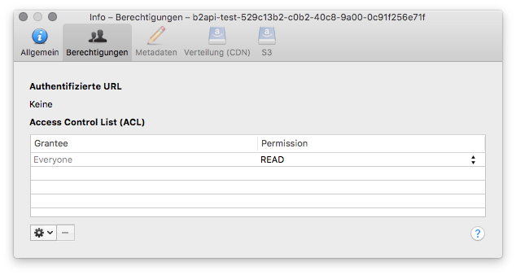

Backblaze B2¶

Backblaze B2 Cloud Storage works similar to Amazon S3 or Microsoft Azure, allowing you to store unlimited data in the cloud. But does it for 1/4th the cost.
Connecting¶
Obtain the login credentials from backblaze.com. Choose App Keys on the sidebar and generate a new application key. Once you have your credentials, choose B2 Cloud Storage from the list of protocols when editing a bookmark or use the b2:// scheme when using the CLI.

Authenticating using Master Key¶
The Master Application Key for an account can be found at the top of the App Keys page of the Backblaze website once you signed in.
The key for your account has complete access but will become invalid if you generate a new one.
The key information is only shown when generating the key and is not shown again, so make sure you save the credentials in a secure location if you plan on using this more than once.
Use your Account ID and Master Application Key to log in.
Authenticating using Application Key¶
Use your Key ID and Application Key to log in. The application key can be restricted to a single bucket.
How to create Application Keys¶
Use the Backblaze website and sign in to your account
Click on App Keys in the left-hand menu
Select Add a New Application Key
Specify the key settings and permissions and click on Create New Key
After the Application Key is created, a blue panel is displayed containing the
Key IDandApplication Keyfor the newly generated key.
Important
The key information will only appear once. Copy the information somewhere safe for later retrieval.
Cyberduck CLI¶
You can list all buckets with Cyberduck CLI using
duck --username <application key> --list b2:/
Refer to the Cyberduck CLI documentation for more operations.
Features¶
Creating Buckets¶
Choose File → New Folder to create a new bucket in the root of the browser.
Bucket names, notably:
must be between 6 and 50 characters long;
can only consist of alphanumeric characters or “-“;
are case insensitive;
are globally uniques (i.e. across all Backblaze accounts);
cannot begin with “b2-” (reserved for Backblaze use).

Private¶
Setting it to allPrivate means that every download requires an authorization token.
Public¶
Setting it to allPublic means that everybody is allowed to download the files in the bucket.
File Versioning¶
You can view all revisions of a file in the browser by choosing View → Show Hidden Files.
Authorized URL¶
Create an authorized URL to make files available publicly. Choose File → Share…. The shared URL expires in 7 days.
Large File Uploads¶
Files larger than 200MB are split into 100MB chunks and uploaded with multiple connections. The number of connections used can be limited using the toggle in the lower right of the transfer window.

Large uploads can be resumed when interrupted.
Unfinished Large Uploads¶
You can view unfinished large uploads in the browser by choosing View → Show Hidden Files.
Checksum¶
If you want to have the SHA1 checksum set in the file info for the large file upload in large_file_sha1 make sure to check Preferences → Transfers → Checksum → Uploads → Verify checksum.
Edit Bucket Type¶
New buckets are private by default, meaning that you need a bucket authorization token to download the files. You can allow public access to files by opening the ACL tab in the Info panel and choose Everyone → Read.

Edit Bucket Lifecycle Rules¶
Retries for Failed File Transfers¶
The number of times a retry attempt is made upon a failure such as 503 Service Unavailable depends on the setting in Preferences → Connection → Repeat failed networking tasks → Number of retries.